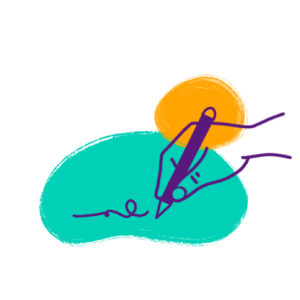

El convenio 189
Este convenio de la Organización Internacional del Trabajo—OIT establece la igualdad de condiciones de las personas trabajadoras del hogar frente a otros trabajos y establece los estándares para la realización de sus labores.
Los principales estándares del convenio
-

Contrato
laboralLas personas trabajadoras del hogar deben tener un contrato escrito en el que sean detalladas las condiciones del empleo, el salario y los horarios.
-
Seguridad
socialLas personas trabajadoras del hogar deben tener acceso a sistemas de seguridad social que les proporcionen protección en situaciones como enfermedad, maternidad, accidentes laborales y vejez.
-
Abuso, acoso y
violenciaLas personas trabajadoras del hogar deben ser protegidas contra cualquier forma de maltrato físico y psicológico. Se enfatiza en la necesidad de proporcionar un ambiente laboral libre de violencia, acoso y abuso.
-
Migrantes
Las personas trabajadoras del hogar tienen derechos ya sean migrantes o nacionales. El convenio busca asegurar que las personas migrantes reciban un trato justo y equitativo, igual al de las trabajadoras nacionales.
¿Cuál es el estado de la implementación de este convenio?
Pese a ser un convenio vinculante para todos los países miembros de la OIT, su ratificación e implementación depende de cada país.
México
El trabajo del hogar remunerado ha sido oficialmente reconocido en México como empleo gracias a la ratificación del Convenio 189 de la OIT en 2019.
Desde entonces, se han realizado modificaciones en la Ley Federal del Trabajo, la Ley del Seguro Social, la Ley Orgánica del Poder Judicial de la Federación y la Ley Federal de la Defensoría Pública, que garantizan diversos derechos para las personas que trabajan en el hogar. Estos derechos incluyen la obligación de contar con un contrato por escrito, un salario justo que no puede ser inferior al mínimo establecido, jornadas laborales equitativas, acceso a la seguridad social, prima vacacional, pago de días de descanso, prestaciones y aguinaldos, entre otros.
Además, se han implementado medidas para fomentar espacios de trabajo seguros, como el registro del contrato ante una autoridad laboral competente, la prohibición de solicitar constancia o prueba de no embarazo para la contratación, y la prohibición de despedir a una trabajadora del hogar embarazada, estableciendo la presunción de discriminación en caso de ocurrir. Las reformas a las leyes se centraron en aspectos clave de la Justicia Laboral, Libertad Sindical y Negociación Colectiva, que antes excluían al trabajo del hogar remunerado.
Desde septiembre de 2019 la Secretaría del Trabajo y Previsión Social—STPS forma parte del Grupo de Trabajo Intersecretarial y de Organizaciones de la Sociedad Civil sobre el Trabajo del Hogar. Su objetivo es promover el pleno ejercicio de los derechos de las personas trabajadoras del hogar y garantizar su igualdad de condiciones frente al resto de la fuerza laboral.
¿Cuál es la situación de las 2.4 millones de personas trabajadoras del hogar en México?
-
90,2% son mujeres 22.5 % es población migrante.
-
Sólo el 2,5 %de las personas trabajadoras del hogar en México tiene un contrato laboral por escrito.
-
Las trabajadoras del hogar aportan más del 26%al Producto Interno Bruto —PIB
-
Sólo el 2%de las personas trabajadoras del hogar ha sido afiliada a la seguridad social, pese a que desde noviembre de 2022, el acceso a la seguridad social es una prestación obligatoria.
Guatemala
Lamentablemente, en Guatemala el trabajo del hogar remunerado aún no es reconocido por el gobierno y el Convenio 189 de la OIT sigue sin ser ratificado.
Sumado a esto, la legislación laboral no ha experimentado cambios significativos durante décadas, lo que deja desprotegidos los derechos fundamentales de las personas trabajadoras del hogar. Esta situación las coloca en una posición vulnerable, llevando a la desvalorización de su trabajo, normalizando maltratos y abusos.
La legislación actual que rige a las personas trabajadoras del hogar se encuentra en el Título IV de “Trabajo sujeto a Regímenes Especiales” del Código del Trabajo, entre los artículos del 161 al 166, donde se contemplan disposiciones discriminatorias relativas a la jornada laboral, sin límites, a los descansos y a las causas de despido.
En 2017 la Corte de Constitucionalidad dejó sin lugar un amparo interpuesto por las organizaciones sociales de trabajadoras del hogar que buscaba reformar el código de trabajo y dar entrada al Convenio 189.
¿Cuál es la situación de las trabajadoras del hogar en Guatemala?
-
11.8% de las mujeres se dedica al trabajo del hogar remunerado.
-
44% de las trabajadoras del hogar son personas indígenas y migrantes.
-
En Guatemala la seguridad solo incluye prestaciones por maternidad.
-
Sólo el 0,2%de las trabajadoras del hogar tiene algún tipo de protección social.